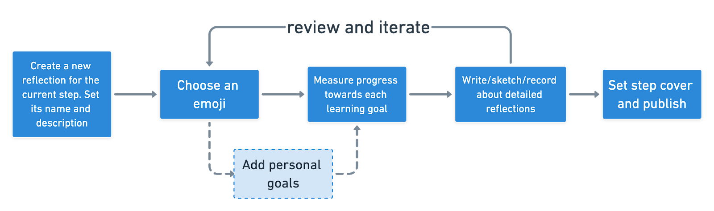
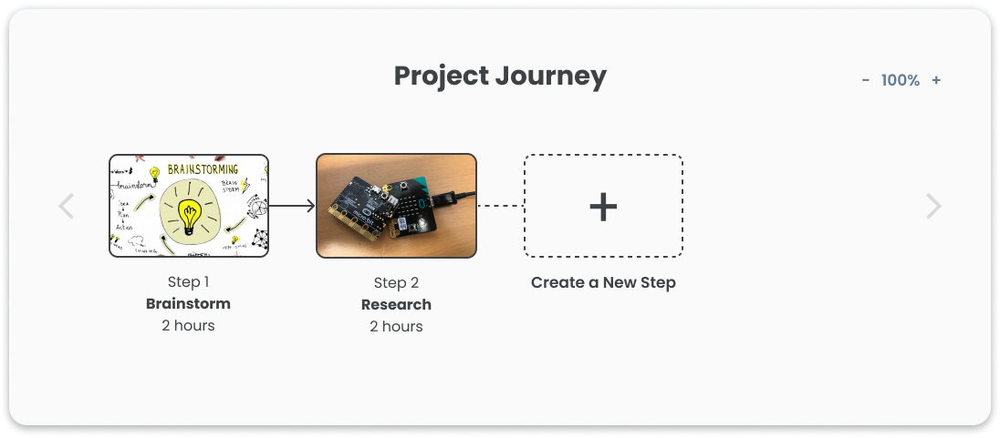
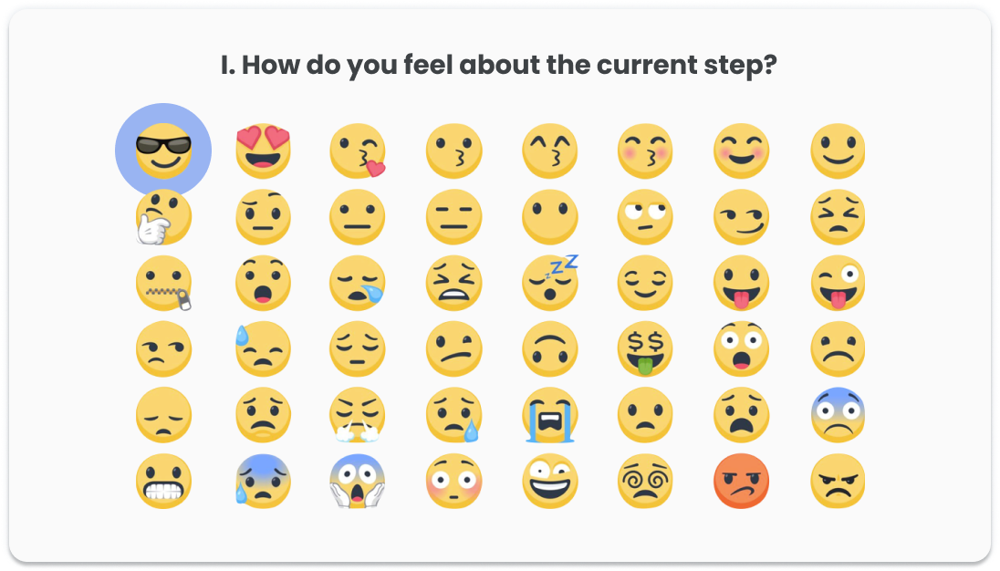
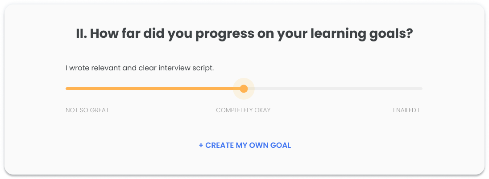
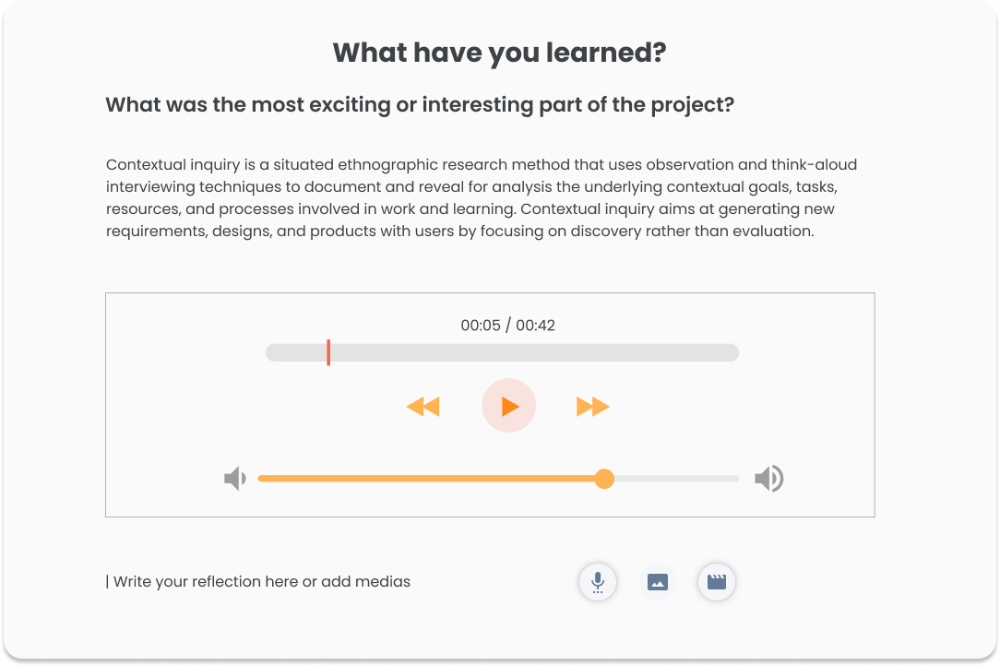
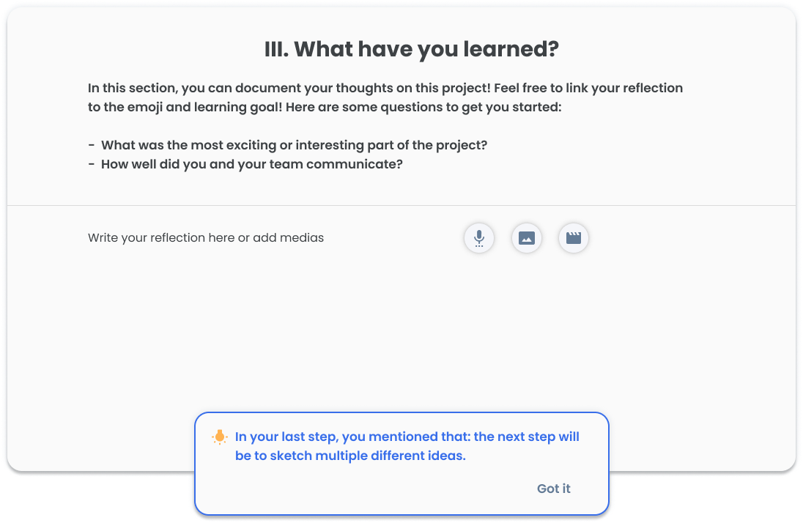
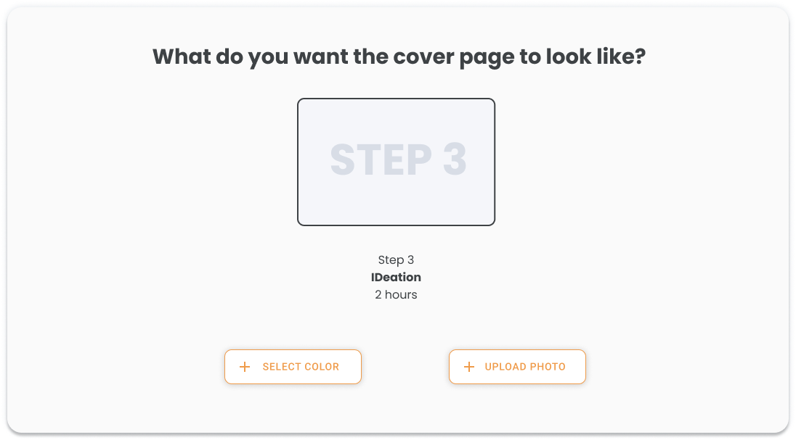
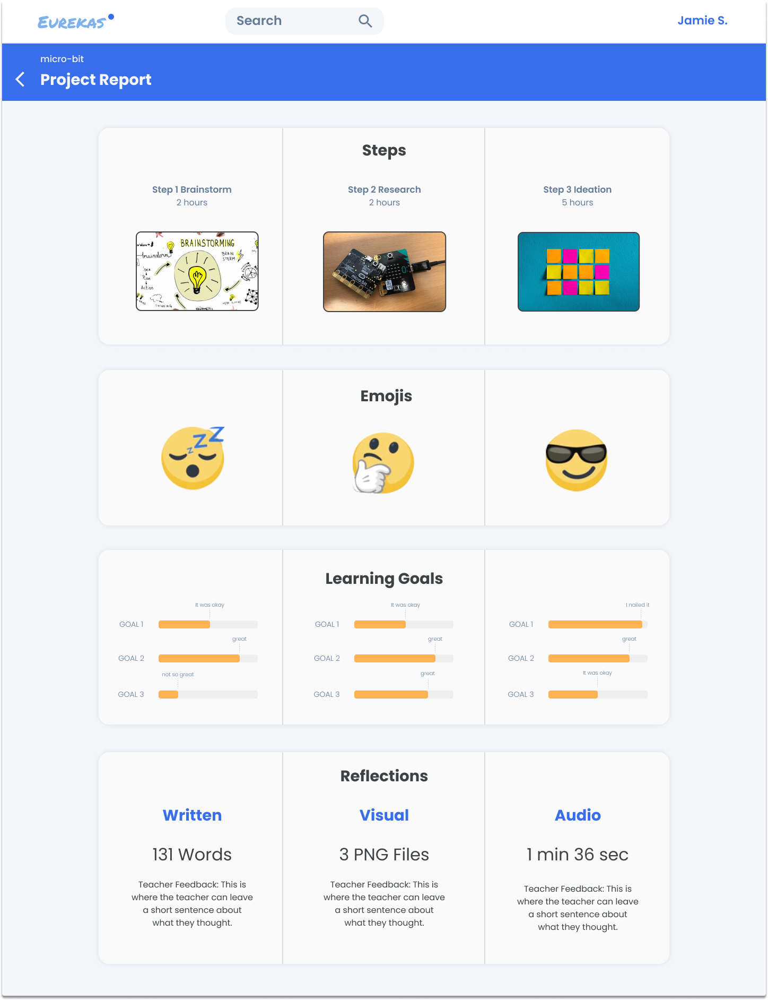
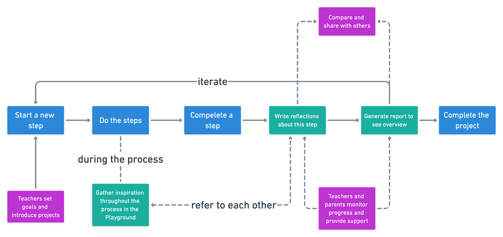
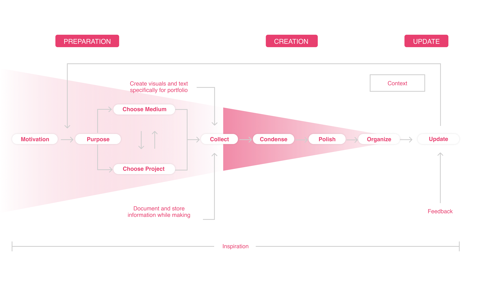

Duration: Sept. 2019 - Dec.2019
Role: UX Researcher, UX Designer, Front-end Developer
Team: Anna Boyle, GyuEun Park and Yu Zhao
Result:
Website
prototype
My Contributions:
Planned and conducted contextual inquiries, semi-structured interviews,
focus group, speed-dating, and think-aloud.
Ideated and created stodyboards and interactive sketches for 3 design cycles
individually.
Created low- to high-fidelity prototypes.
Created visual artifacts such as work model and learner experience map.
Implemented high-fidelity website prototype individually.
Project-based learning has been the trending for most middle schools.
Addressing the problem of reflection and documentation in this context
can make the school visible to the public, and help students gain
metacognitive skills.
In our discovery research phase, we identified two main problems facing
the key stakeholders — teachers and students. Teachers struggle to integrate
documentation into the workflow of the classroom due to time and attention
constraints. Additionally, students’ approach to reflection is cursory and
lacks intrinsic motivation. They perceive reflection and writing as stressful
and just another school work.
Consequently, we propose our problem statement and vision statement as the
following:
Platform usage in context
An isolated standard process for creating a new reflection will be:

For this functionality, students can have different usage contexts:
F1. Support Big Picture Understanding through Project Journey
.

Each time after students completed a step, they can use the “create new
reflection” function to seriously, completely and thoroughly reflect on their
journey. During the project, students can refer back to what they have
recorded, felt, and learnt in the previous steps as well as iterate on the
current step. Project Journey supports learning through making the connection
among steps visible.
F2.1 Scaffolding Reflection through emoji and learning progress bar.


EureKAS makes reflection easier by allowing students to choose emoji to get an
easy start and to indicate learning on the progress bar, before they move on
to the actual reflection.
F2.2 Granting autonomy in choosing the medium to reflect.

Students can choose to write, sketch, audio-record or video-record for their
reflection.
F2.3 Design progressive reflection prompts to scaffold reflection.

During the semester, students will first face scaffolded reflection
prompt in detail to get an easy start. For example, they will be
provided simple and specific reflection questions like “what is the most
difficult part of implementing the robot?”. As the project goes, they will
face more open-ended and thoughtful questions to better develop their
metacognitive learning skills.
F3 Customize step cover to design a personalized journey.

After finishing the reflection, students get to choose a cover page to
represent the step in their journey. They can either choose to use pure
color or the process picture in their documentation.
F4 Generate report to monitor progress throughout the journey.

Students can generate report that summarizes their journey whenever
needed. The report includes their emotional and learning journey. Teachers
and parents can also benefit from the report to get an idea of the student's
current progress and thus better personalize his/her learning.
F5 Store unorganized thoughts and documentation in Playground.
 Students can always store their random thoughts and documentation in the
Playground system. It supports several forms of file and provide tagging
for future usage. Students can also filter the files to make use of them
in their reflection.
Students can always store their random thoughts and documentation in the
Playground system. It supports several forms of file and provide tagging
for future usage. Students can also filter the files to make use of them
in their reflection.
A broader usage of the platform
Aside from the main stakeholder, the students, this process can also have
teachers, peers, and parents participated in. Teachers will set the
learning goals for the steps, monitor students progress and feeling
throughout the process, and provide in-time support to students. Parents
can easily learn about what their children have done in school, how they
felt about it and what they have learnt through visualization of outcomes
and the evidence of the progress at any time. Students can also share
their learning and feeling through their reflections, provide and receive
suggestions for peers, and iterate on their own reflection.
Combined with these contexts and other characters, the usage of this
platform can be summarized in the following diagram. The red blocks are
where other characters step in, the blue blocks are students actions, and
the green blocks are the actions that can be performed on the platform.

Contextual Inquiry
Semi-structured Interview
Focus Group
Cultural
Probe
Work Model
Diagnostic Mapping
Affinity Diagram
Persona & user
profile
What is the landscape of portfolio making?
We've explored the concept and the importance of the Maker Movement,
documentation, and portfolio though several guiding literatures at the
beginning of our research stage. Then we moved on to contextual
inquiries with 4 experts in portfolio making and developed a work model
of expert portfolio practice.

What is our context?
Our project is conducted specifically focusing on the project-based
learning class in Kentucky Avenue School, Pittsburgh, PA. We started with
2 directed storytelling interviews with the teachers to fit our model
into the actual context, understand their value and challenges, and
investigate the causes behind using diagnostic mapping.
Through the analysis of diagnostic mapping, we've identified the
major challenge that teachers face in project-based learning class - they
found it hard to integrate documentation and reflection into
the classroom because of time and attention limitation.
What do the students feel?
We wanted to gain insight into the student experience. We focused on obtaining
information on the students’ motivation and challenges regarding the
documentation process, and using the results to generate ideas for
possible solutions.
We conducted semi-structured interviews and asked students to
perform cultural probe in groups. The above persona is generated
afterwards highlighting students' pain points and challenges.
Iterations: 3
Testing methods & artifacts used:
Storyboards
Speed
Dating
Learner Experience Map
Think Aloud
We generated 20 ideas that tackle the issue of motivation from various
perspectives: documentation, breakthrough, communicating importance,
providing engaging experiences and many more. Our design principles are:

After the speed dating with our stakeholders, we've reframed the
storyboards and decided to focus on the "visualize" idea, which
scaffolds the reflection process visually. Thenwe created a learner
experience map communicating a student's journey using our product and
how other stakeholders interact with him/her.
We conducted two rounds of usability testings with 8 users. The first
round used a black and white paper prototype and the second round used a
digital functional one. We iterated our prototypes according to 2
principles: Concise and Intuitive.
How to be concise?
Use conventional designs and limit freedom not related to learning goals.
How to be intuitive?
Find the best metaphor to represent "journey" to students.